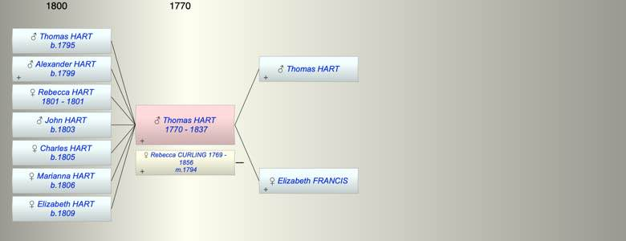

| [Index] |
| Thomas HART (1770 - 1837) |
|  |
| b. 1770 at Dorking |
| m. 11 Oct 1794 Rebecca Ann CURLING (1769 - 1856) at Chipstead |
| d. 1837 aged 67 |
| Parents: |
| Thomas HART |
| Elizabeth FRANCIS |
| Children (7): |
| Thomas HART (1795 - ) |
| Alexander HART (1799 - ) |
| Rebecca HART (1801 - 1801) |
| John HART (1803 - ) |
| Charles HART (1805 - ) |
| Marianna HART (1806 - ) |
| Elizabeth HART (1809 - ) |
| Events in Thomas HART (1770 - 1837)'s life | |||||
| Date | Age | Event | Place | Notes | Src |
| 1770 | Thomas HART was born | Dorking | Note 1 | ||
| 11 Oct 1794 | 24 | Married Rebecca Ann CURLING (aged 25) | Chipstead | Note 2 | |
| 1795 | 25 | Birth of son Thomas HART | Dorking | Note 3 | |
| 1799 | 29 | Birth of son Alexander HART | Dorking | Note 4 | |
| 1801 | 31 | Birth of daughter Rebecca HART | Dorking | Note 5 | |
| 1801 | 31 | Death of daughter Rebecca HART | Dorking | Note 6 | |
| 1803 | 33 | Birth of son John HART | Dorking | ex 1851 census | |
| 1805 | 35 | Birth of daughter Charles HART | Dorking | ex 1851 census | |
| 05 May 1806 | 36 | Birth of daughter Marianna HART | Dorking | Note 7 | |
| 1809 | 39 | Birth of daughter Elizabeth HART | Dorking | ex 1851 census. | |
| 1837 | 67 | Thomas HART died | |||
| Personal Notes: |
| Will - PROB 11/1878 Thomas Hart of Droking, attorney and solicitor refers to his wife Rebecca, sons Alexander, Thomas, John, Charles, daughters Marianna, Elizabeth. Proved 23 May 1837 |
| Created on a Mac™ using iFamily for Mac™ on 8 Oct 2023 |